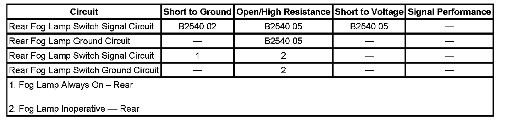

B2540
DTC B2540
DTC DESCRIPTOR
DTC B2540 02
Rear Fog Lamp Control Circuit Short to Ground
DTC B2540 05
Rear Fog Lamp Control Circuit Short to Battery or Open
DIAGNOSTIC FAULT INFORMATION

Perform the Diagnostic System Check - Vehicle prior to using this diagnostic procedure. Initial Inspection and Diagnostic Overview
CIRCUIT/SYSTEM DESCRIPTION
When the rear fog lamp switch is placed in the ON position, ground is applied to the auxiliary body control module (XBCM) through the rear fog lamp switch circuit. The XBCM then applies voltage on the rear fog lamp control circuit to the rear fog lamp.
CONDITIONS FOR RUNNING THE DTC
The ignition is ON. Park lamps must be ON and the rear fog lamps must be commanded ON.
CONDITIONS FOR SETTING THE DTC
The body control module (BCM) detects an open, short to ground, or short to voltage on the rear fog lamp control circuit while trying to apply a voltage to the circuit.
ACTION TAKEN WHEN THE DTC SETS
The rear fog lamps do not illuminate.
CONDITIONS FOR CLEARING THE DTC
- The conditions for setting the DTC are no longer present.
- A history DTC clears after 100 malfunction-free ignition cycles.
- The BCM receives the clear code command from the scan tool.
CIRCUIT/SYSTEM VERIFICATION
Ignition ON, activate the rear fog lamps in the output control with a scan tool. The Rear Fog Lamp Relay Cmd. data parameter should display ON and the rear fog lamps should illuminate.
CIRCUIT/SYSTEM TESTING
1. Inspect the rear fog lamp bulb for an open or shorted filament.
- If the bulb is inoperable, replace the bulb.
2. Park lamp switch OFF, clear the DTC and test the rear fog lamp control circuit for a short to voltage, short to ground, open, or high resistance.
- If all circuits/connections test normal, replace the XBCM.
REPAIR INSTRUCTIONS
Perform the Diagnostic Repair Verification after completing the diagnostic procedure.
- Rear Fog Lamp Bulb Replacement (Cadillac Export)
- Control Module References for XBCM replacement, setup, and programming. Verification Tests Programming and Relearning